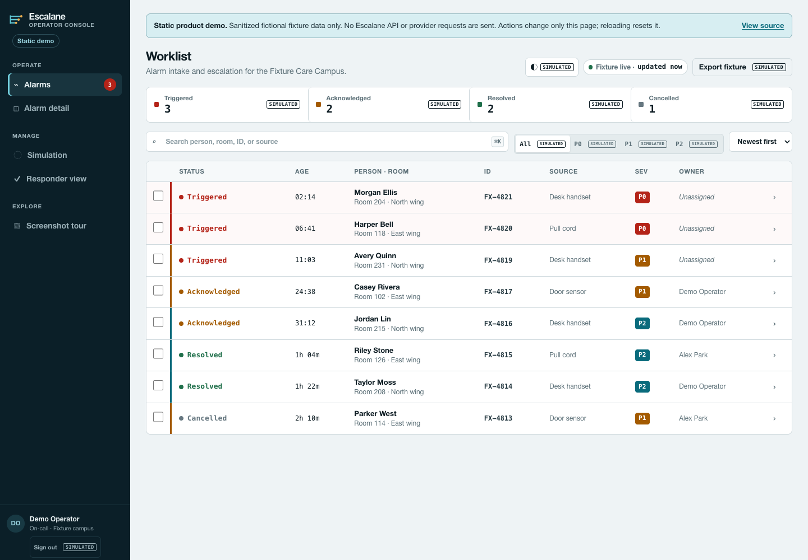
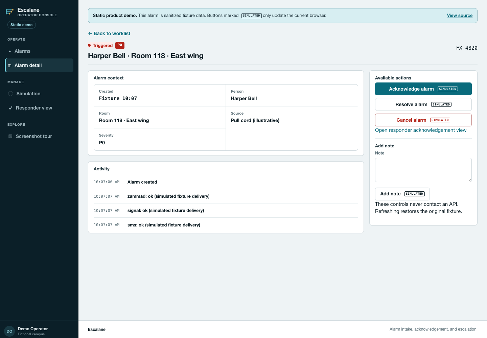
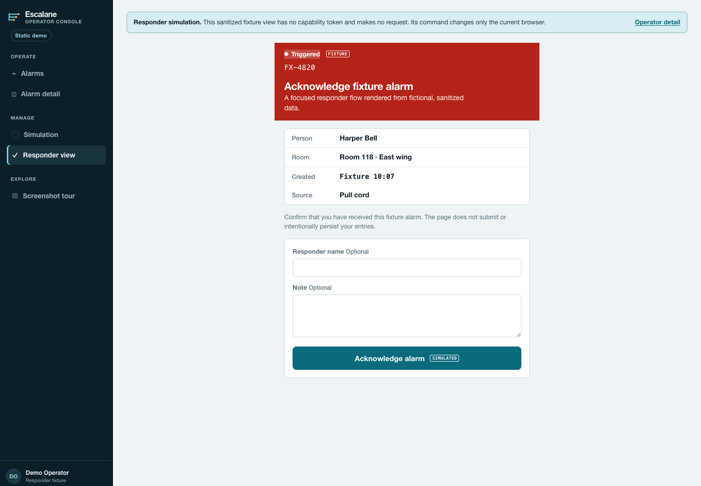
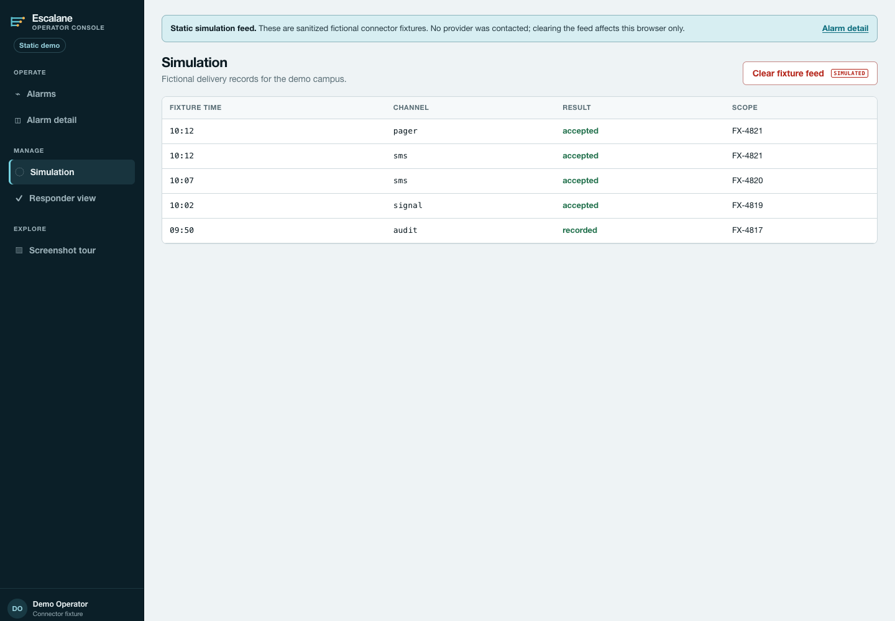

Take a look around
From the operator worklist to a responder’s acknowledgement, in four screens.
Open any screenshot at full size, or follow its link to try the screen. The demo shares Escalane’s styles and uses browser-local sample data. Pull cords, door sensors, and pager entries are illustrative; the integration guide lists supported interfaces.
1. Find an alarm
Filter by status or severity, search by person or room, then open a row to see its detail drawer.


Try this screen2. Review its history
Read the context and timeline, add a note, and try the lifecycle actions. Changes stay on this page.


Try this screen3. Confirm receipt
Try the responder form with an optional name and note. Use fictional entries here.


Try this screen4. Inspect sample deliveries
Browse fictional delivery records, then clear the list. Reloading restores the sample entries.


Try this screen